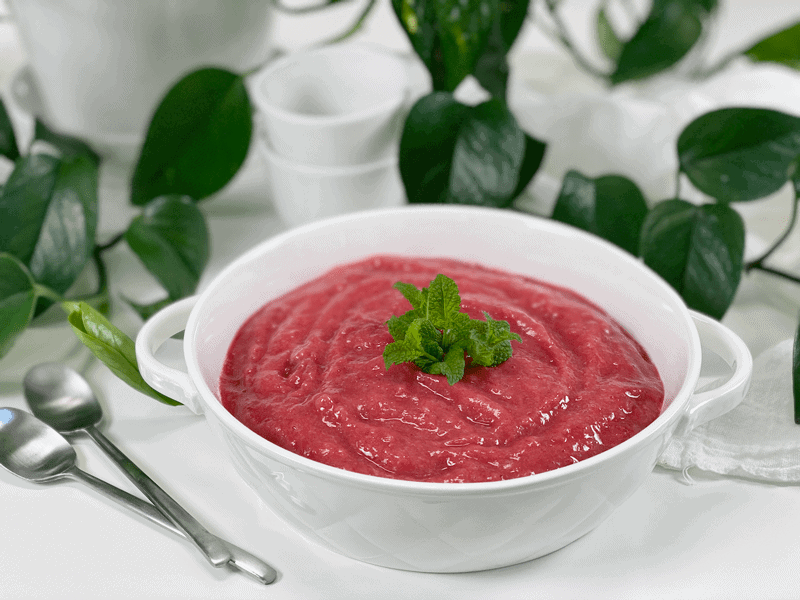

Great Grandma’s Strawberry Rhubarb Sauce | Sugar-Free

While I love the tartness of rhubarb and the sweetness of strawberries individually, nothing beats the combination of the two when brought together in this amazing sauce. This recipe didn’t come from my great- grandma’s recipe box (as the recipe title might suggest), but to honor her I make it every time I can get my hands on rhubarb, since she was well known for her Strawberry Rhubarb Sauce!

Great-grandma’s kitchen was about the size of a postage stamp, yet she could feed an army with grace and ease. If I wasn’t busy making mudpies out back, I was always trying to see what she was creating in the kitchen. I would either have to drag a stool next to her, or I would have to stand on my tiptoes to get a peek. Sugar…I recall watching a waterfall of sugar being poured into the cooking pot, which, as a little one, made me drool all over myself. I can’t imagine cooking that way today, so I found a way to make it sugar-free and delicious. Grab your apron, spin around so I can tie the strings for you…now let’s get hopping into the kitchen.
Refrigerator Syrup Tips
- It is best to start with ripe fruit, for the fullest flavor, texture, and nutrient potential. Unripe strawberries and rhubarb will require more sweetener to make them enjoyable. Let’s not force Mother Nature.
- If you don’t have access to fresh strawberries or rhubarb, you can use frozen. I used frozen strawberries and put them in the pot with the rhubarb while they were frozen. By nature, the rhubarb will take longer to cook than the strawberries, so adding them frozen balanced the cooking time.
- If you’ve never worked with rhubarb, it resembles the look and feel of celery. You will want to make sure that you cut the rhubarb into smaller pieces, or it will take a lot longer than the berries to break down during the cooking process. DO NOT eat or juice the leaves of rhubarb, as they are toxic when consumed. This is why you never see rhubarb in the grocery stores with the leaves on it.
- This recipe makes about 2 1/4 cups of sauce, but that will vary based upon how much it reduces during the cooking process.
- If you use liquid stevia or vanilla in this recipe, add it once you take the jam off the heat. Both are like alcohol and will evaporate and cook down when heated, to the point of not being able to taste them.
The Joys of Great-Grandma’s Sauce
Yields 2 1/4 cups
- 2 cups rhubarb cubed (cut lengthwise, then chopped)
- 2 cups organic strawberries
- 1/4 tsp sea salt
- 2 tsp fresh lemon juice
- 2 tsp vanilla extract
- 1/4 tsp NuNaturals liquid stevia–to taste
-
In a medium saucepan, combine the rhubarb, strawberries, and salt. Cover, let cook down, and bring to a gentle simmer over low-medium heat, stirring frequently.
- If you’d rather not use stevia, you can add 2-4 Tbsp of maple syrup at this time. Stevia users–see step #4.
- Adding salt to the base will help round out the sweet and sour flavors.
- A long, slow simmer drives the moisture out of the fruit, helping to preserve and thicken it at the same time.
- If the mixture starts sticking to the base of the pan, the temperature is too high; reduce it.
-
Once both fruits are soft, it’s time to blend into a thick sauce. Add the hot mixture to the blender with the lemon juice, vanilla, and stevia.
- Let cool, then transferring to clean jars or a squirt bottle (I prefer this for the ease of drizzling over my waffles).
-
It will keep in a sealed container in the refrigerator for up to 2 weeks. You can also freeze this sauce for up to 3 months without affecting the flavor. Make sure that you use freezer-safe jars or containers that are airtight. Label and date each jar.
-

-

-
Just getting started with the cooking process.
-

-
Almost near completion; you can see how much the fruits have broken down.
© AmieSue.com